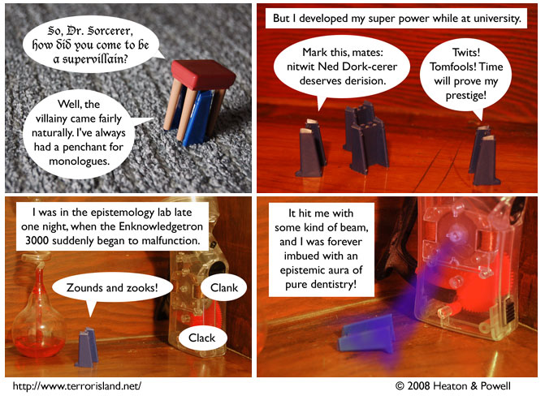

Strip #319
— Wednesday, June 25, 2008
Being global skeptics, Ned’s professors didn’t know what to make of the situation.
Notes, Thoughts, &c.
Ben’s Notes
Here’s how the division of labor breaks down at Terror Island: Lewis is the one who comes up with Ned’s origin story involving an epistemology machine shooting out a ray of dentist knowledge, and I’m the one who decides that that ray is purple.
Lewis’s Notes
This comic is quasi-autobiographical, though I myself tend to work in the metaphysics lab, where the Ontologizing Engine is used by metaphysicians and metaphysicists to create new fundamental categories of being.
We are up to about 15 now.